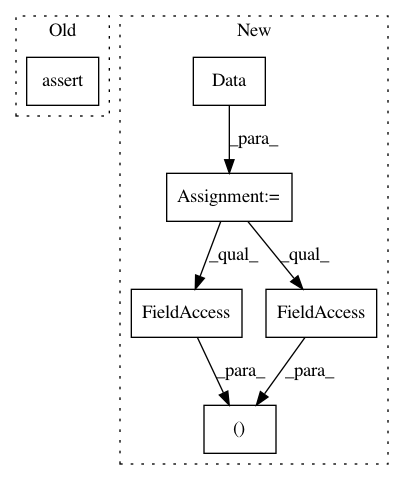

3898f705a06bca707a9c1f5c1c5f171b037a96a0,torch_geometric/transform/cartesian_test.py,CartesianTest,test_cartesian_adj,#CartesianTest#,9
Before Change
assert_equal(adj.size(), [3, 3, 2])
assert_equal(position.numpy(), expected_position)
assert_equal(adj[:, :, 0].numpy(), expected_adj_x)
assert_equal(adj[:, :, 1].numpy(), expected_adj_y)
After Change
weight = torch.FloatTensor([1, 1, 1, 1])
adj = torch.sparse.FloatTensor(index, weight, torch.Size([3, 3]))
position = torch.FloatTensor([[1, 0], [0, 0], [-2, 4]])
data = Data(None, adj, position, None)
data = CartesianAdj()(data)
adj, position = data.adj, data.position
expected_adj = [
[[0, 0], [0.375, 0.5], [0, 0]],
[[0.625, 0.5], [0, 0], [0.25, 1]],
In pattern: SUPERPATTERN
Frequency: 3
Non-data size: 6
Instances
Project Name: rusty1s/pytorch_geometric
Commit Name: 3898f705a06bca707a9c1f5c1c5f171b037a96a0
Time: 2017-11-18
Author: matthias.fey@tu-dortmund.de
File Name: torch_geometric/transform/cartesian_test.py
Class Name: CartesianTest
Method Name: test_cartesian_adj
Project Name: rusty1s/pytorch_geometric
Commit Name: 831e2ebde9122f2ffb2d128c4f8b8e85151efad0
Time: 2017-11-18
Author: matthias.fey@tu-dortmund.de
File Name: torch_geometric/transform/polar_test.py
Class Name: PolarTest
Method Name: test_polar_adj
Project Name: rusty1s/pytorch_geometric
Commit Name: 831e2ebde9122f2ffb2d128c4f8b8e85151efad0
Time: 2017-11-18
Author: matthias.fey@tu-dortmund.de
File Name: torch_geometric/transform/spherical_test.py
Class Name: SphericalTest
Method Name: test_spherical_adj